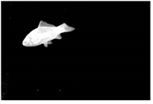

在采样背景屏幕颜色并发现前景对象的边缘看起来非常好之后，有时你会发现前景对象的一个区域是透明的。这是由于前景包含接近背衬屏幕颜色的颜色。这种透明度被删除时使用 清洁 FG 噪音 操作时，前景对象的边缘会拾取接近背衬屏幕颜色的条纹。在不牺牲图像质量的情况下，这很难去除。
当 混合渲染 模式启用后，Primatte 内部从同一图像创建两个键:
• 核心 -此遮罩移除了透明度，但存在前景对象的坏边缘。
• 边缘 -这个哑光在前景上有一个干净的边缘，但是在前景对象中存在透明度。

的 核心 磨砂与坏的边缘，然后模糊和侵蚀之前，它被合成在 边缘 具有透明度的哑光，产生了两个选项中最好的复合。
下的控件 混合磨砂 允许您调整操作上, 核心 哑光:
• 侵蚀 -调整上执行的侵蚀量 核心 哑光。要查看结果，请设置 输出模式 到 混合核心 查看阿尔法频道。
• 模糊半径 -调整模糊时使用的模糊半径 核心 哑光。要查看结果，请设置 输出模式 到 混合边缘 查看阿尔法频道。
|
|